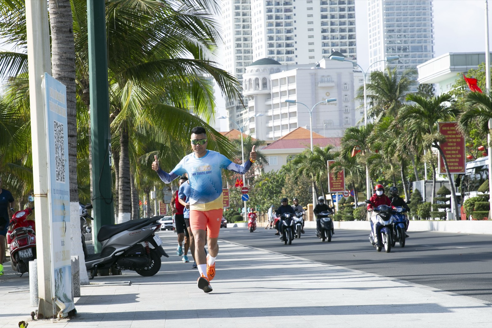
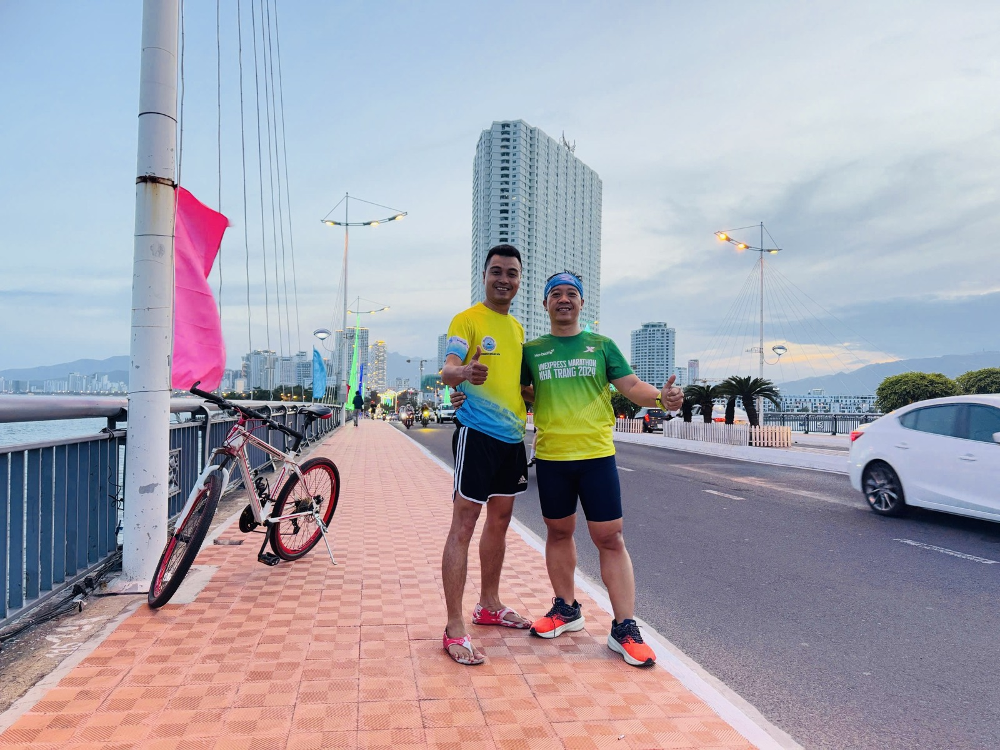

Sau 42km là gì? Ba tháng tới của một người chạy nghiệp dư
Về đích marathon xong, câu người ta hay hỏi là "thấy thế nào?". Còn câu tôi tự hỏi mình ngay tối hôm đó lại khác: tiếp theo là gì?

Đường Trần Phú — cung đường tập quen thuộc của tôi mấy năm nay.
Tôi không phải vận động viên. Tôi là người bán bất động sản, có ba đứa con và một cái quán. Chạy bộ với tôi là thứ giữ cho phần còn lại của cuộc đời chạy được.
Ngày 9/8: hơn 5 tiếng, và tôi không giấu con số đó
VnExpress Marathon Nha Trang, cự ly 42km. Tôi về đích ở mốc 5 giờ 35 phút.
Nói thẳng: đó không phải thành tích nhanh. Nhiều anh em trong cộng đồng chạy quanh mốc 3–4 tiếng. Nhưng tôi không giấu con số của mình, vì với người vừa đi làm vừa chạy thì về đích được đã là đủ để đi tiếp.
Đoạn tôi nhớ nhất hôm đó không phải vạch đích. Là lúc trên đèo, gặp nhóm anh em cự ly 21km đang chạy về — gặp toàn người quen, chào hỏi nhau, cười. Chạy mãi rồi mới hiểu: cái mình đi tìm không hẳn là thời gian trên đồng hồ.
Vì sao tôi luôn có mục tiêu kế tiếp trước khi về đích cái hiện tại
Đây là thói quen tôi học được từ chính chuyện chạy, rồi mang sang việc làm ăn.
Nếu về đích rồi mới nghĩ "tiếp theo làm gì", thì có một khoảng trống — và trong khoảng trống đó, cơ thể nghỉ mất nếp, đầu cũng nguội theo. Còn khi đã có mục tiêu kế tiếp nằm sẵn trên lịch, buổi chạy sáng hôm sau tự nhiên có lý do để dậy.
Không phải cứ nghỉ là hồi. Nghỉ mà không có đích kế tiếp thì thành bỏ.
Ba mốc trong ba tháng tới
Lịch của tôi từ giờ đến hết năm, xếp theo đúng thứ tự:
- Cuối tháng 8 — giải phối hợp ở Huế. Bơi sông Hương 1,5km rồi chạy 10km. Cự ly ngắn, nhưng là lần đầu tôi bơi ở sông — nước sông khác nước biển, đây là thứ tôi phải học lại từ đầu.
- Còn một cự ly full marathon nữa trong năm. Mục tiêu năm nay tôi đặt là 3 giải FM, hiện đã xong 2. Giải thứ ba tôi vẫn chưa chốt — và tôi biết mình phải chốt sớm, vì càng về cuối năm càng bận.
- Tháng 11 — trail 55km ở Lâm Đồng. Đây là mốc lớn nhất: dài hơn marathon 13km, và chạy trên núi chứ không phải đường nhựa.

Trail 55km khác marathon đường nhựa ở chỗ nào
Tháng 7 năm nay tôi đã chạy trail 35km lần đầu trong đời, nên tôi biết hai thứ này không cùng một môn.
Marathon đường nhựa là cuộc chơi của nhịp đều: giữ tốc độ, giữ nhịp thở, giữ tinh thần. Trail thì địa hình quyết định — có đoạn phải đi bộ leo dốc, có đoạn xuống dốc hại đầu gối hơn cả chạy. Thời gian hoàn thành dài hơn nhiều, và cái mệt nó khác.
Nên ba tháng này tôi không tập chạy nhanh hơn. Tôi tập ba thứ:
1. Chạy dài cuối tuần, tăng dần. Không nhảy cóc. Cơ thể cần thời gian để quen với thời lượng, không phải với tốc độ.
2. Tập lên dốc xuống dốc thật. Chạy đường bằng ở Trần Phú thì đẹp nhưng không đủ — phải lên địa hình dốc thì chân mới quen.
3. Giữ chân khoẻ và ngủ đủ. Ở tuổi này, chấn thương làm mình mất cả mùa chứ không phải một tuần. Giãn cơ sau mỗi buổi và ngủ sớm quan trọng ngang với buổi tập.
Giữ nhịp thế nào khi vẫn phải chạy khách cả ngày
Đây là câu tôi bị hỏi nhiều nhất, và câu trả lời của tôi không hay ho gì: tôi tập vào sáng sớm, trước khi ngày kịp cướp mất thời gian của mình.
Có hôm đêm trước ngủ không ngon, tôi vẫn dậy trước 5 giờ và chạy 5km. Có hôm trước đó tiếp khách, uống cũng kha khá — sáng ra vẫn đi. Không phải vì tôi giỏi chịu đựng. Mà vì tôi biết chỉ cần cho phép mình bỏ một buổi vì lý do chính đáng, thì tuần sau sẽ có lý do chính đáng khác.
Tôi có một tấm gương ở ngay Nha Trang: một chú đã ngoài 70, ngày nào cũng chạy khoảng 20km rồi đi bơi. Thần thái khoẻ hơn nhiều người kém chú vài chục tuổi. Mỗi lần định viện cớ, tôi nghĩ tới chú.
Bài học đắt nhất năm nay lại đến từ một trận đá bóng
Tôi đi đá bóng với anh em. Và tôi — một người hoàn thành Ironman, chạy marathon — chạy một lúc là thở hổn hển, người đau ê ẩm.
Hoá ra chạy bền và bứt tốc là hai chuyện khác hẳn nhau. Sức bền tôi có, nhưng tốc độ thì không, vì tôi chưa bao giờ tập nó.
Điều này đúng cả trong nghề. Có người bền — theo khách hai năm không bỏ. Có người bứt tốc — chốt nhanh, xử lý gọn. Sức bền không tự sinh ra tốc độ, và ngược lại. Thiếu cái nào thì phải biết mình thiếu, rồi tập riêng cái đó, chứ không phải cố hơn ở cái mình vốn đã giỏi.
Vì sao tôi vẫn chạy
Có một điều ở văn hoá chạy bộ mà tôi không thấy ở cuộc đua nào khác: người về trước đứng lại chờ đồng đội về sau, rồi ôm chúc mừng. Trên đường thì hô nhau "cố lên, sắp tới rồi", chạm tay nhau khi vượt qua. Không ai ganh ai cả.
Còn với riêng tôi, lý do sâu hơn nằm ở nhà. Có lần chạy marathon ở Hà Nội, 5km cuối chân tay rã rời, tôi gần như muốn bỏ. Thứ kéo tôi đi tiếp là ý nghĩ mang huy chương về cho con. Đoạn qua Hồ Tây trước vạch đích, tôi vừa chạy vừa khóc.
Giờ thì các con tôi bắt đầu hỏi về chuyện tập thể thao. Với tôi, đó là phần thưởng lớn hơn mọi tấm huy chương đang treo ở nhà.
Tháng 11, Lâm Đồng, 55km. Tôi không chắc mình sẽ về đích đẹp. Nhưng tôi chắc mình sẽ có mặt ở vạch xuất phát — và với người nghiệp dư, đó mới là phần khó.
"Rồi, ngày mới tốt lành nhé."
Sống tử tế · Kiếm tiền hạnh phúc · Cho đi giá trị
Anh/chị đang tập cho giải nào?
Nếu anh/chị cũng chạy ở Nha Trang, nhắn tôi một câu — sáng sớm ngoài Trần Phú, chạy cùng nhau cho vui. Người mới bắt đầu càng hoan nghênh.
Theo dõi trên Facebook